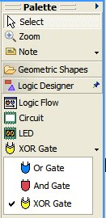

Tutorial: Configuring and Extending the Diagram Palette
Contents
Overview
[back to top]
The palette is a UI control that displays a set of tools to be
used in conjunction with the active diagram editor. The tools may
be used for selection, object creation or any other action to be
performed on the active diagram. This tutorial provides the reader
with a guide for configuration of palette drawers, tools and
stacks.
References
[back to top]
This tutorial references the following extension point:
org.eclipse.gmf.runtime.diagram.ui.paletteProviders
More information about this extension points can be found in the
palette provider's schema
documentation.
Introduction
[back to top]
In this tutorial, we will use the Logic Diagram Example to
illustrate how to configure the palette diagram for a logic
diagram. To gain familiarity with the Logic Diagram Example, refer
to the Logic Example
Guide.
Adding a Palette Provider
Extension
[back to top]
Add an extension to register the palette drawer, stack and tools.
The governing extension point for palette contribution is:
org.eclipse.gmf.runtime.diagram.ui.paletteProviders
Please refer to the
org.eclipse.gmf.runtime.diagram.ui.paletteProviders extension point
documentation for specific information on the tags and
attributes to use. The full extension XML can be found in
org.eclipse.gmf.examples.runtime.diagram.logic/plugin.xml.
<!-- Palette Provider --> <extension
id="logicPaletteProvider" name="%ext.logicPaletteProvider"
point="org.eclipse.gmf.runtime.diagram.ui.paletteProviders">
... </extension>
The contribution given above will result in the following Logic
Designer palette drawer, stack and tools:

Creating and Registering
the Palette Provider and Factory Classes
[back to top]
The palette provider class reads the XML palette contributions
from the provider's extension point and contributes them to an
editor's palette based on the contribution criteria.
The factory contribution is explained below along with an
excerpt from LogicPaletteFactory.
<!-- Palette Provider --> <extension ...
<paletteProvider
class="org.eclipse.gmf.runtime.diagram.ui.providers.internal.DefaultPaletteProvider"
> <Priority name="Low"> </Priority> <editor
id="LogicEditor"> </editor> <contribution
factoryClass="org.eclipse.gmf.examples.runtime.diagram.logic.internal.providers.LogicPaletteFactory">
... </extension>
The contribution
factoryClass defines the factory class used to map the tools to a
tool type (e.g. CreationTool). You may want to define a new tool in
order to add new functionality to your tool.
public class LogicPaletteFactory extends
PaletteFactory.Adapter { /** list of supported tool types. */
private Map toolMap = new HashMap(); { toolMap.put(
LogicConstants.TOOL_LED, new CreationTool(LogicSemanticType.LED) );
toolMap.put( LogicConstants.TOOL_CIRCUIT, new
CreationTool(LogicSemanticType.CIRCUIT) ); toolMap.put(
LogicConstants.TOOL_ORGATE, new
CreationTool(LogicSemanticType.ORGATE) ); toolMap.put(
LogicConstants.TOOL_ANDGATE, new
CreationTool(LogicSemanticType.ANDGATE) ); toolMap.put(
LogicConstants.TOOL_XORGATE, new
CreationTool(LogicSemanticType.XORGATE) ); toolMap.put(
LogicConstants.TOOL_FLOWCONTAINER, new
CreationTool(LogicSemanticType.FLOWCONTAINER) ); } /** list of
supported tool types. */ private Map connectionMap = new HashMap();
{ connectionMap.put( LogicConstants.TOOL_CONNECTION, new
ConnectionCreationTool(LogicSemanticType.WIRE) ); } /* * Create the
tool according to type */ public Tool createTool(String toolId) {
if (toolId.equals(LogicConstants.TOOL_CONNECTION)) { return
(ConnectionCreationTool)connectionMap.get(toolId); } else { return
(CreationTool)toolMap.get(toolId); } } }
Creating a
Palette Drawer
[back to top]
A palette drawer is used to group a set of associated tools. The
drawer can be open and closed by the application user.
The palette drawer can be added and removed by adding and
removing the entry tag with kind set to drawer. The schema
documentation specifies the rules for attributes. These attributes
include the label, description, path, icon and id. The stack and
tools that will reside under the drawer will need to include the
drawer id in their respective paths. Note that removing a drawer
requires removal of its stacks and tools.
The order of the drawers, stacks and tools depend on the
associated priority and position with respect to other entries in
the same XML document.
<!-- Palette Provider --> <extension ... <entry
label="%LogicDrawer.Label" kind="drawer"
description="%LogicDrawer.Description" path="/"
small_icon="icons/comp.gif" id="logicDrawer"> <expand>
<content> <!-- expand by default for LogicEditors -->
</content> </expand> </entry> ...
</extension>
Creating a
Palette Stack
[back to top]
A palette stack is used to group a set of closely related tools
(e.g. gate types on a logic diagram).
The palette drawer can be added and removed by adding and
removing the entry tag with kind set to stack. The schema
documentation specifies the rules for attributes. These attributes
include the label, description, path, icon and id. The tools that
will reside within the stack will need to include the stack id in
their respective paths. Note that removing a stack requires removal
of the stack's tools.
<!-- Palette Provider --> <extension ... <entry
label="%GateStack.Label" kind="stack"
description="%GateStack.Description" small_icon="icons/or24.gif"
path="/logicDrawer/" id="noteStack"> </entry> ...
</extension>
Creating a Palette
Tool
[back to top]
The palette tool can be added and removed by adding and removing
the entry tag with kind set to tool. The schema
documentation specifies the rules for attributes. These attributes
include the label, description, path, icon and id.
<!-- Palette Provider --> <extension ... <entry
label="%LogicFlowTool.Label" kind="tool"
description="%LogicFlowTool.Description"
large_icon="icons/logicflow24.gif" path="/logicDrawer/"
small_icon="icons/logicflow16.gif" id="FlowContainer">
</entry> ... </extension>
Adding a
Palette Tool/Stack to an Existing Drawer or Stack
[back to top]
To add or remove an existing drawer or stack, the user must
specify the path to the existing drawer or stack in the entry tag
attributes. The palette service execution is based on a REVERSE
strategy and therefore the new tool or stack must have a higher
priority than that of the destination.
The following XML will contribute a new logic tool into the
Logic Drawer set up in the logic example. The palette factory class
will need to set up the tool internally as well. Note the priority
is set to medium and that the contribution is made by adding this
excerpt to org.eclipse.gmf.runtime.diagram.ui.geoshapes\plugin.xml
file.
<!-- Palette Provider --> <extension
id="logicPaletteProvider" name="%ext.logicPaletteProvider"
point="org.eclipse.gmf.runtime.diagram.ui.paletteProviders">
<paletteProvider
class="org.eclipse.gmf.runtime.diagram.ui.providers.internal.DefaultPaletteProvider">
<Priority name="Medium"> </Priority> <editor
id="LogicEditor"> </editor> <contribution
factoryClass="org.eclipse.gmf.runtime.diagram.ui.geoshapes.internal.providers.GeoshapePaletteFactory">
<entry label="%NewLogicTool.Label" kind="tool"
description="%NewLogicTool.Description"
large_icon="icons/newlogic24.gif" path="/logicDrawer/"
small_icon="icons/newlogic16.gif" id="NewTool">
</entry> </contribution> </paletteProvider>
</extension>
The drawer now appears:

The label needs to be set in the appropriate plugin.properties
file. It has been left uninterpolated for emphasis.
Separating the
Definition and Contribution of a Palette Entry
[back to top]
A plug-in may wish to define palette entries without
contributing them to an editor so that other clients may contribute
these palette entries to their editor's palette as
appropriate.
To define a palette entry only, simply set defineOnly to true in
the palette entry's schema definition. The following XML will
define the geoshapes drawer without contributing it to an
editor.
<extension
point="org.eclipse.gmf.runtime.diagram.ui.paletteProviders">
<paletteProvider
class="org.eclipse.gmf.runtime.diagram.ui.providers.DefaultPaletteProvider">
<Priority name="Low"> </Priority>
<contribution
factoryClass="org.eclipse.gmf.runtime.diagram.ui.geoshapes.internal.providers.GeoshapePaletteFactory">
<entry defineOnly="true"
description="%GeoshapeDrawer.Description" id="geoshapeDrawer"
kind="drawer" label="%GeoshapeDrawer.Label"> </entry>
<entry label="%OvalTool.Label" kind="tool"
description="%OvalTool.Description"
large_icon="icons/IconEllipse24.gif" path="geoshapeDrawer/"
small_icon="icons/IconEllipse.gif" id="oval"> </entry> ...
</contribution> </paletteProvider>
</extension>
The following XML shows how to contribute the predefined geoshapes
drawer to an editor.
<extension
point="org.eclipse.gmf.runtime.diagram.ui.paletteProviders">
<paletteProvider
class="org.eclipse.gmf.runtime.diagram.ui.providers.DefaultPaletteProvider">
<Priority name="Medium"> </Priority> <editor
id="GeoshapeEditor"> </editor> <contribution>
<predefinedEntry id="geoshapeDrawer" path="/">
</predefinedEntry> </contribution>
</paletteProvider> </extension>
The palette service execution is based on a REVERSE strategy and
therefore the contribution of the palette entry must have a higher
priority than that of the definition.
Other palette entries, such as palette tools can also be
predefined and contributed by separate extensions. To add a palette
tool from an existing drawer to a new drawer, use a predefined
entry similar to the following:
<predefinedEntry id="existingDrawer/aTool"
path="/myDrawer"/>
Drawers that have already been contributed, can be expanded by
default on an editor by another plugin.
The following XML shows how an existing drawer would be
expanded.
<extension
point="org.eclipse.gmf.runtime.diagram.ui.paletteProviders">
<paletteProvider
class="org.eclipse.gmf.runtime.diagram.ui.providers.DefaultPaletteProvider">
<Priority name="High"> </Priority>
<contribution> <predefinedEntry
id="geoshapeDrawer"> <expand force="true"/>
</predefinedEntry> </contribution>
</paletteProvider> </extension>
Removing an Existing Palette
Entry
[back to top]
A plug-in may wish to remove a palette entry that another plugin
has already contributed.
To remove a palette entry, simply set remove to true in the
predefined palette entry's schema definition. The following XML
shows how to remove a tool from the geoshapes drawer.
<extension
point="org.eclipse.gmf.runtime.diagram.ui.paletteProviders">
<paletteProvider
class="org.eclipse.gmf.runtime.diagram.ui.providers.DefaultPaletteProvider">
<Priority name="High"> </Priority>
<contribution> <predefinedEntry
id="geoshapeDrawer/oval" remove="true"/>
</contribution> </paletteProvider> </extension>
Summary
[back to top]
In this tutorial, we did the following:
Copyright
(c) 2000,2005,2006 IBM Corporation and others. All Rights
Reserved.